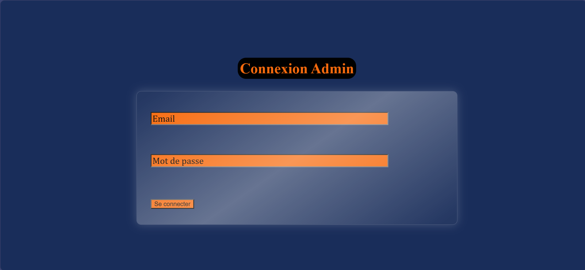
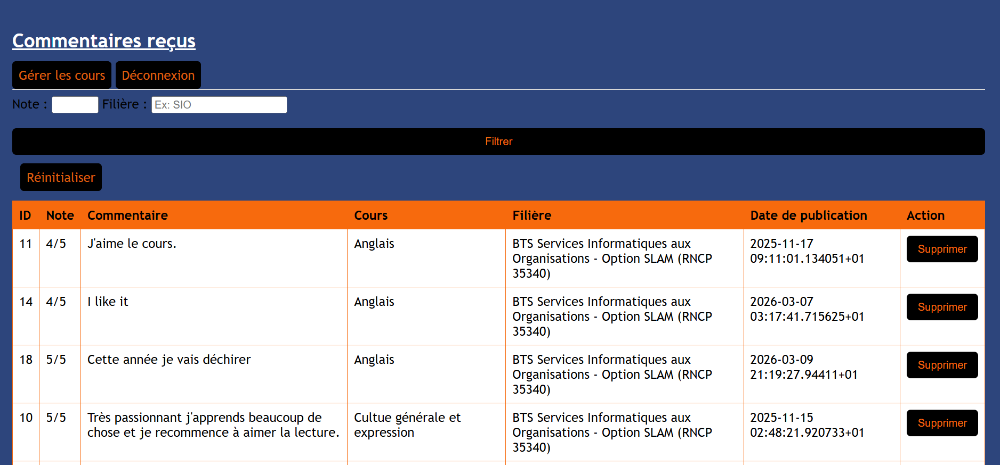
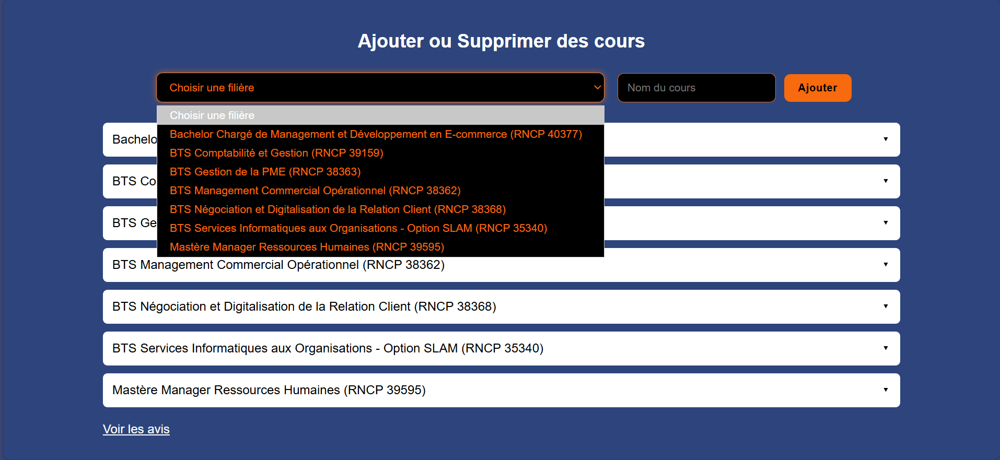
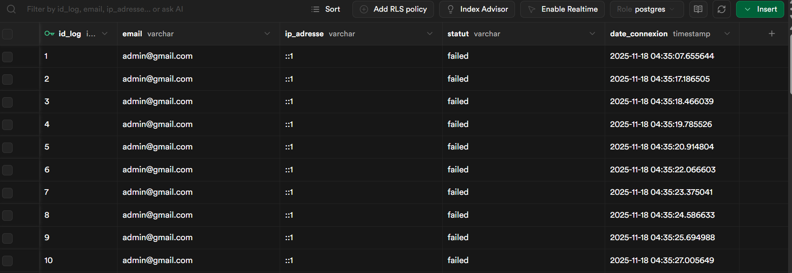
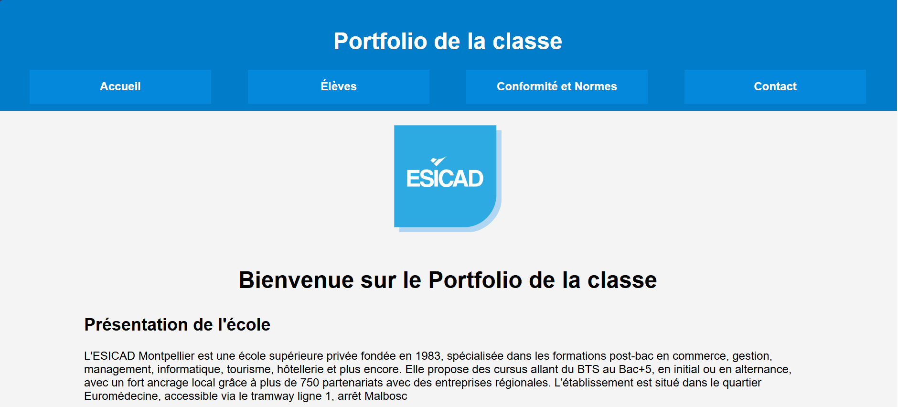
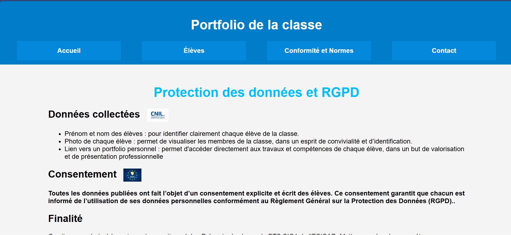
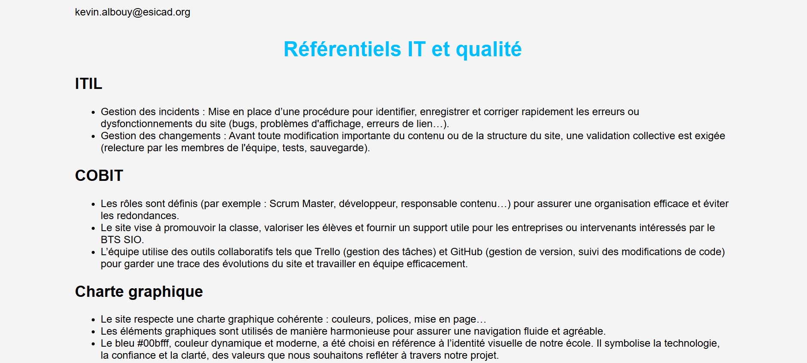
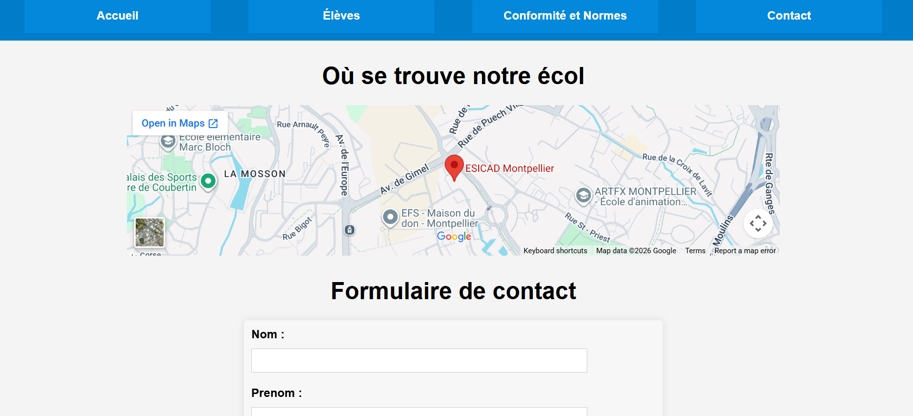
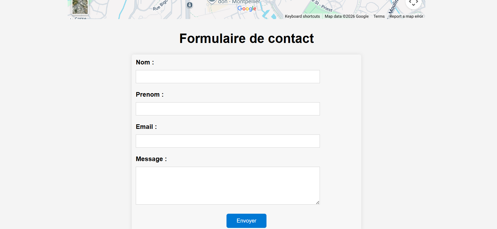

Mes Projets
Projet : Jeu de combat Pokémon (Application Web)
Ce projet consiste à développer une application web interactive permettant à un utilisateur de faire combattre deux Pokémon. Les Pokémon sont récupérés dynamiquement via l’API publique PokéAPI. L’utilisateur peut sélectionner les personnages, lancer différentes attaques (Feu, Eau, Éclair) et visualiser les animations de combat ainsi que l’affichage du gagnant.
Technologies utilisées
- HTML5
- CSS3
- JavaScript (ES6)
- API REST : PokéAPI
Gérer le patrimoine informatique
- Recenser et identifier les ressources numériques
Preuves : utilisation de HTML, CSS, JavaScript et de l’API PokéAPI pour récupérer les données des Pokémon. - Exploiter des référentiels, normes et standards
Preuves : respect des standards web (HTML5, CSS3, JavaScript ES6) et utilisation d’une API REST.
Répondre aux incidents et aux demandes d’évolution
- Traiter des demandes concernant les applications
Preuves : gestion des actions utilisateur (clic sur attaque, mise à jour des PV, animations, affichage du gagnant).
Développer la présence en ligne
- Participer à l’évolution d’un site web exploitant des données
Preuves : récupération dynamique des Pokémon depuis l’API et affichage des informations dans l’interface. - Valoriser l’image sur les médias numériques
Preuves : design arcade, animations d’attaque, interface interactive et règles du jeu intégrées.
Travailler en mode projet
- Analyser les objectifs d’un projet
Objectif : créer un jeu Pokémon interactif utilisant une API. - Planifier les activités
Étapes : menu → sélection des Pokémon → combat → animations → écran de victoire. - Réaliser les tests d’intégration
Preuves : tests des attaques, mise à jour des points de vie et affichage du gagnant.
Mettre à disposition un service informatique
- Déployer un service
Preuves : application web accessible directement via un navigateur. - Accompagner les utilisateurs
Preuves : menu principal, pop-up expliquant les règles du jeu et interface simple.


MaTodolist
Une application PWA pour créer, avec une interface utilisateur pour la gestion, un système de notification rappel, un système de sauvegarde locale, fonctionnalités d'export et d'import des tâches, système feedback utilisateur et un service worker permettant l'utilisation hors ligne(mini tutoriel, captures d'écran de l'application, code source, video de démo).
1️⃣ Gérer le patrimoine informatique
Intitulé : Gestion des ressources et des données d’une application de gestion de tâches.
Recenser et identifier les ressources numériques
Preuve : Organisation structurée des fichiers du projet.
- index.html
- script.js
- style.css
- manifest.json
- service-worker.js
- dossier images
Vérifier la continuité d’un service informatique
Preuve : Utilisation d’un Service Worker pour fonctionnement hors ligne.
- service-worker.js
- Mise en cache des fichiers
- Application fonctionnelle sans connexion
Gérer des sauvegardes
Preuve : Système de sauvegarde et restauration des tâches.
- Export/import des tâches en JSON
- Stockage dans localStorage
2️⃣ Répondre aux incidents et aux demandes
Intitulé : Collecte et traitement des retours utilisateurs.
Collecter et orienter des demandes
Preuve : Système de feedback utilisateur.
- Formulaire de feedback
- Stockage des messages
- Interface de consultation
Traiter les demandes
Preuve : Améliorations de l’application selon les besoins.
- Notifications de rappel
- Export/import des tâches
- Amélioration de l’interface
3️⃣ Mettre à disposition un service informatique
Intitulé : Développement et mise à disposition d’une PWA accessible via navigateur.
Tests d’intégration et d’acceptation
Preuve : Vérification des fonctionnalités clés.
- Ajout/suppression de tâches
- Marquage des tâches terminées
- Notifications
- Export/import
- Fonctionnement hors ligne
Déploiement et accompagnement
Preuve : Application accessible et tutoriel intégré.
- Exécution via Live Server
- Installation comme PWA
- Modal de bienvenue et guide d’utilisation


Anonym_Avis&Comment
Ce projet consiste à développer une application web interne permettant aux étudiants de déposer des avis anonymes sur les cours dispensés dans l'établissement ISDG. L'objectif est d'améliorer la qualité pédagogique en permettant à l'administration de consulter et analyser les retours étudiants.
Technologies utilisées
- HTML / CSS : structure et design de l’interface
- JavaScript : interactions et validation côté client
- PHP : traitement des formulaires et logique serveur
- PostgreSQL : stockage des données
- Supabase : hébergement et gestion de la base de données
- GitLab : gestion de version et hébergement du code
Répondre aux incidents et aux demandes
L'application permet de collecter les avis des étudiants et de les centraliser pour l'administration. Les administrateurs peuvent consulter, filtrer et supprimer les commentaires, ce qui répond aux besoins applicatifs de l'organisation.
Développer la présence en ligne de l’organisation
Le projet met à disposition un service web interne permettant la communication entre étudiants et administration. Le site exploite les données de l'organisation (cours, commentaires, notes) stockées dans la base de données.
Travailler en mode projet
Le développement s'appuie sur un cahier des charges définissant les objectifs, les fonctionnalités et un planning prévisionnel comprenant : conception de la base de données, développement de l'interface étudiant et admin, puis phase de tests.
Mettre à disposition un service informatique
Le service développé permet aux étudiants de soumettre des avis anonymes et à l'administration de consulter les résultats via une interface sécurisée. Des tests ont été réalisés pour vérifier le bon fonctionnement du formulaire, de la connexion à la base de données et des fonctionnalités administratives.






Portfolio de la Classe – BTS SIO1
Dans le cadre de notre formation BTS SIO1 à l’ESICAD Montpellier, nous avons réalisé un site web collectif présentant notre classe, l’école, nos portfolios individuels et les normes de conformité (RGPD, ITIL, COBIT). Ce projet a été développé en HTML5 et CSS3 et inclut des éléments interactifs tels qu’un formulaire de contact et une carte Google Maps intégrée.
- Gérer le patrimoine informatique : Organisation des pages, images, PDFs et portfolios des élèves. Preuve : structuration HTML/CSS, dossiers d’assets, charte graphique cohérente.
Développer la présence en ligne : Valorisation de la classe et des élèves sur Internet. Preuve : pages élèves avec liens vers portfolios, mise en conformité RGPD.- Travailler en mode projet : Collaboration et suivi des tâches via GitHub et Trello. Preuve : répartition des rôles, intégration des pages HTML, gestion des versions.
- Mettre à disposition un service informatique : Formulaire de contact et information accessible aux utilisateurs. Preuve : contact fonctionnel et carte Google Maps intégrée.
- Organiser son développement professionnel : Portfolios individuels et identité numérique professionnelle. Preuve : portfolios PDF et sites externes des élèves accessibles depuis le site.
Ce projet montre notre capacité à créer un service web complet, à travailler en équipe, à respecter les normes et standards, et à valoriser nos compétences professionnelles en ligne.




